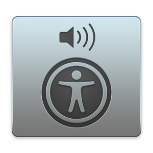

Accessibility APIs
 |
 |
|
|
UI Automation (UIA) MS Active Accessibility (MSAA) IAccessible2 (IA2) |
OSX Accessibility Protocol (AXAPI) |
Accessibility Toolkit (ATK) AT Service Provider Interface (AT-SPI) |
Leonie Watson, The Paciello Group (TPG)
Accessible By Design, Bloomington May 2018
Léonie Watson ~
Most HTML elements have implicit semantics (role and state)
a element<a href="https://tink.uk">Tink.UK</a>a elementimg element<img src="chamucos.png"
alt="A bottle of Chamucos tequila with the dancing devil logo">img elementinput type="checkbox" element<input type="checkbox" id="tequila" checked>
<label for="tequila">Tequila makes me happy</label>input type="checkbox" elementSome elements do not convey role or state
div & span elements<div>
<span class="button">
Add English Breakfast tea to basket</span>
</div>div & span elementsHTML has interactive elements that receive focus, including:
<a href><button><input>
<button>1</button>
<button>2</button>
<button>3</button>
Interactive elements have expected interactions provided by the browser:
details & summary elements<details>
<summary>Tequila...</summary>
Makes me happy!
</details>details elementdetails & summary elements |
|
|
|
UI Automation (UIA) MS Active Accessibility (MSAA) IAccessible2 (IA2) |
OSX Accessibility Protocol (AXAPI) |
Accessibility Toolkit (ATK) AT Service Provider Interface (AT-SPI) |
Attributes that polyfill missing role, name, and state information for screen readers
ARIA 1.1 (W3C Recommendation)
w3.org/TR/wai-aria-1.1
role attribute70+ roles, including:
tablist, tab, tabpanelcheckbox, radio, textboxtable, row, celltoolbar, menu, menubararia- attributes45+ states and properties, including:
aria-invalid, aria-requiredaria-pressed, aria-expandedaria-controls, aria-ownsdetails & summary elementsDesign pattern available here:
design-patterns.tink.uk
div and span elements<span id="button">Tequila <span id="icon"></span></span>
<div id="content">Makes me happy</div>tabindex attribute<span id="button" tabindex="0">Tequila <span id="icon"></span></span><script>
var button = document.getElementById('button');
button.setAttribute('tabindex', 0);
</script>role attributebutton.setAttribute('role', 'button');aria-expanded attributebutton.setAttribute('aria-expanded', 'false');aria-controls attribute (optional)button.setAttribute('aria-controls', 'content');aria-hidden attributeicon.setAttribute('aria-hidden', 'true');hidden attributecontent.setAttribute('hidden', 'true');<span id="button" tabindex="0" role="button"
aria-expanded="false" aria-controls="content">
Tequila <span id="icon" aria-hidden="true"></span>
</span>
<div id="content" hidden>Makes me happy</div>button.addEventListener('click', disclose, false);button.addEventListener('keydown', function(event) {
if (event.keyCode == 13 || event.keyCode ==32) {
disclose();
}
});if (content.hasAttribute('hidden')) {
button.setAttribute('aria-expanded', 'true');
button.setAttribute('aria-controls', 'content');
content.removeAttribute('hidden');
}
else {
button.setAttribute('aria-expanded', 'false');
content.setAttribute('hidden', 'true');
button.removeAttribute('aria-controls');
} |
 |
 |  |
||
| Jaws | NVDA | Voiceover | Narrator | Orca | TalkBack |
| (Freedom Scientific) | (NV Access) | (Apple) | (Microsoft) | (GNOME) | (Android) |


<body vlink="#ff4c4c"
alink="#ff4c4c"
link="#ff4c4c"
text="#ff0000"
bgcolor="#000000"
background="img/bg_stars.gif">
...
</body><table width="500" border="0">
<tbody>
<tr>
<td align="left">...</td>
...
</tr>
<tbody>
</table><center>
<nobr>
...
</nobr>
</center><font size="-1">
<a target="_blank" href="http://www.warnerbros.com/term-use">
Legal/Privacy Information About This Site.</a>
</font>It's resilient, but:
before/after pseudo-elementsafter selector#a:after {
content: ' Makes me happy!';
}
...
<a href="/" id="a">Tequila!</a>Generated content does not alter the document tree. In particular, it is not fed back to the document language processor (e.g., for reparsing).
<a href="/" id="a">Tequila!</a>after selector |
 |
 |
 |
| Chrome | Edge | Firefox | Safari |
| (Google) | (Microsoft) | (Mozilla) | (Apple) |
after content in the accessible name calculationbutton element
<div>
<button>1</button>
<button>2</button>
<button>3</button>
</div>
display & order properties<div style="display: flex;">
<button style="order: 3;">1</button>
<button style="order: 2;">2</button>
<button style="order: 1;">3</button>
</div>Authors must use ‘order' only for visual, not logical, reordering of content.
tabindex attribute<div style="display: flex;">
<button style="order: 3;" tabindex="3">1</button>
<button style="order: 2;" tabindex="2">2</button>
<button style="order: 1;" tabindex="1">3</button>
</div>tabindex attribute problemaria-flowto attribute<div style="display: flex;">
<button id="b1" aria-flowto="b3" style="order: 3;">1</button>
<button id="b2" aria-flowto="b1" style="order: 2;">2</button>
<button id="b3" aria-flowto="b2" style="order: 1;">3</button>
</div>aria-flowto attributearia-flowto attribute problem... just a little bit better than yesterday
Accessible By Design, Bloomington May 2018
Léonie Watson ~